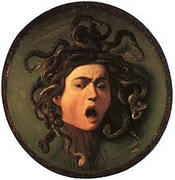

Medusa
De la unión entre Poseidón y Medusa nacieron Pegaso y Crisaor; algunos alegan que Poseidón adoptó la forma de pájaro para yacer con Medusa. Se dice que de la sangre que manaba del cuello de Medusa en el desierto salpicado dio vida entre las arenas en la forma de serpientes lisas de muchas clases, y así esa tierra todavía pulula con serpientes mortales hasta el día de hoy. Versiones tardías dicen que Caco, un hijo de Hefesto y Medusa, que era el terror y la deshonra del bosque Aventino, arrojaba llamas por cada una de sus tres bocas.
Desarrollo
Hesíodo la nombra por vez primera en su obra Teogonía:.
Conclusión
No lejos, las alígeras hermanas con serpientes por cabellos; las gorgonas, enemigas del hombre